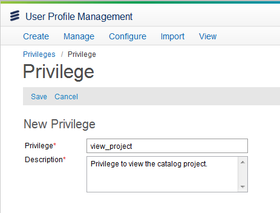

Assign Catalog Privileges
Once Velocity Studio, the System Configuration application, and the database have been properly configured, user privileges must be granted to enable access to the Ericsson Catalog Manager application. For more details regarding assigning user privileges, refer to the User Profile Management's user guide. The following steps describe the process of assigning the Catalog Management Administration privilege, which allows full access to the catalog application. To limit access to the application, refer to the catalog privileges section for more details.
To assign the catalog management administration privilege, complete these steps:
- Run the User Profile Management application. In your Web browser, access the Application selection page by entering http://<hostname>:<port>/cwf/selectApp (for example, http://localhost:8080/cwf/selectApp) as the URL, and log in using username and password credentials: upadmin / upadmin.
- Select the User Profile Manager application; the main Page or this application appears
- Click the Manage > Groups from the menu bar.
- From the Search Group page, click the Search button to get the list of the user groups.
- Double-click the appropriate user group (for example, User Profile Administrators).
- Click the Privileges tab.
- On the Select Privileges page, first click the Edit button and then click the Add button.
- The Search Privileges page appears with the available privileges for that group.
- Select the catalog related privileges (for example, Catalog Management Administration), and click the Select button.
- A message appears, indicating that you have successfully added the privileges.
Create a Privilege
You can create a privilege specific to a catalog implementation. For the new privilege to be used by catalog, it has to be created in both the User Profile Management and Velocity Studio applications. The following example shows the View Project privilege being created in both applications.
To create a new catalog privilege, follow these steps:
- In Velocity Studio, right-click the metadata root (for example, CatalogProj) and create a namespace.
- Right-click the namespace and create a new data type by navigating to Data Dictionaries > Data Types.
- Enter the values for the data type, for the Extends field choose cwf.privilege.
- Run the User Profile Management application. In your Web browser, access the Application selection page by entering http://<hostname>:<port>/cwf/selectApp (for example, http://localhost:8080/cwf/selectApp) as the URL, and log in using username and password credentials: upadmin / upadmin.
- From the menu bar, click Manage > Privileges.
- Click the New button, and enter information in the Name and the Description field.
- Click the Save button to save the privilege.

Note: Ensure that the Name field has the same value in the Velocity Studio and the User Profile Management application.
To verify if the privilege is successfully created or not, check the privileges listed under the Privileges submenu. You can assign the newly created privilege to the user by following the same steps in assign privilege.
|